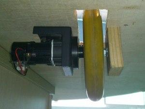

Mr. Tree, an thousand year old ancient tree, standing in the famous halls of SeeedStudio and waiting that the times go by.
But when I arrived at SeeedStudio three weeks ago Mr. Tree was not more than a flower pot, standing somewhere in the dark and collecting dust.
The plan of the ancient god worked at the beginning. Peoples from far far away were coming to see the big tree, bringing him oblations and and extend him with microcontrollers, servo motors and sensors.
But then the tree fall into oblivion and no one was bringing new extensions to him. Instead through the ages most of the extensions, boards and sensors were removed again because someone needed it somewhere else.
So the tree was standing there, with one wheel broken – not able to move, with no microcontroller – not able to think, and no sensor – not able to see.
But because a lot of people came to me and asked me “Hey, there is this Mr. Tree standing here around and collecting only dust, maybe we could make something new and breathe new life into him?” I decided to do it and fulfill the plan of the gods.
So this is where the projects starts:
Mr. Trees Profile:
Name: Mr. Tree
Age: ancient
Birthplace: unknown
Height: 180cm
Base-platform: 120cm
Weight: ~10kg
Hobbies: enjoying tee ceremony, singing on karaoke, dancing naked in the moonlight
Slogan: “Fear me or I will kick your ass when get some legs attached!”
| |
|
| full view |
base platform |
We removed some of the old and broken stuff and removed the dust again. So now he is clean and sparkling again.
| |
|
| fixing the gears and the axis |
fixing the rotary quadrature encoder |
We fixed the broken axis and lubricate the gears a little bit. Also the disc of one of the encoder for measuring the angle/speed was broken. But with the help of our laser cutter it was easy to make a new disc and get it fixed.
| |
 |
Until now the wheel was attached at one side directly to the motor and on the other side hanging in the air. But because this single sided suspension leads to a long lever arm directly on the motor/gear axis and Mr. Tree is very heavy – and one of the motor axis were broken again – we decided to add a suspension and a bearing also on the other side of the wheel. Because there where no aluminum or steel profile directly available and the base platform is also made of wood we just took some wooden board, cut it to our size, drilled a whole in it, put a bearing inside and mounted everything together.
| The third wheel is not driven by a motor and is able to turn in every direction. It still works but it might be to small for our rugged office environment. So in the moment we will keep it like this but maybe replace it later by a bigger wheel or ball. |
|
| |
|
After cleaning and fixing it's time to get started!
Because here at SeeedStudio we develop, produce and sell a lot of parts which might be interesting for every robot project, we made a long wish-list with shields, sensors, transceivers, actuators, LEDs and other stuff to make Mr. Tree smart, vivid and beautiful.
|
one axis joint |
two axis joint |
ultrasonic sensor on a joint |
|
12 servos in 8 directions | ||
Because Mr. Tree is really big – the base platform has a diameter of 120cm – we decided not to save on distance measurement sensors and servo motors to avoid collisions while driving forward, backward or turning left/right. We want also to provide sensors for brightness, sound level and PIR in three different direction to make it possible to locate the direction of light, sound or moving people.
So we attached 12 servos in 8 directions circular in a distance of 45 degree on the base platform of Mr. Tree.
|
Seeeduino ADK Main Board |
Grove Mega Shield |

| |
|
Bee-Shield, GPRS Shield and Music Shield | |
To have all possibilities we decided to use a Seeduino ADK Main Board as the prime embedded control core. Through this we can
- use all benefits of the Arduino platform and attach a lot of different shields
- connect ourselves to the Grove System with a huge number of sensors, actuators and UI elements
- connect directly to other extensions
- communicate with other microcontrollers and boards via wire, Bluetooth, WiFi, RF, IR or GPRS
And if we need more intelligence we can connect directly to an Android smartphone, a tablet/pad or even a netbook/notebook. Using one of them we would have immediately an user interface, internet access, some cameras to look around, text-to-speech and speech-to-text abilities, a display to show a robot face or some control data and of course a lot of processing power.
To power our motors we decided to use two L298 Dual H-Bridge Motor Drivers (1st row, left and right PCB). Of course it would be possible to drive both motors with one of this drivers, but to have more power we bridged the two channels of each motor driver so that we can drive now up to 4A per motor.
We added a 12V to 5V/5A DC/DC switching regulator (2nd row, middle PCB) from the famous Shenzhen SEG market to have enough power not only for our Arduino and the extensions, but especially for our 12 servo motors which need for fast movement much more current then the Arduino board can provide.
The two boards in the middle of the 1st row are used to distribute the 12V and 5V.
And the last board (the 2nd row, left PCB) is the “kill switch” for Mr. Tree. It is a Codec-Adaptive Wireless Relay which you can switch via a remote control key fob like you are using for your car. So you can switch Mr. Tree on and off like a car. We don't have this nice “pee-peep” sound yet, but we will add it as fast as possible ;-)
And in fact it is not only much cooler, but also much more useful as a kill switch, especially when your robot is driving with full speed directly into a wall or the stairway.
Ever tried to reach the kill switch mounted somewhere on the robot fast enough in such cases while standing two meters away? Believe me, it's nearly impossible!
Because Mr. Tree shall represent our company also on such events like Maker Fair, Haxlr8tr or other exhibitions we need also such stuff like user interaction, emotions and some – technically absolutely unimportant, but for humans absolutely necessary – aesthetic elements to make it not only “work”, but also “beautiful”.
So the first aesthetic component we added was a 12V powered full RGB LED stripe from the SEG market around the base platform of Mr. Tree controlled by our Seeeduino ADK main board.
Now we have 114 bright LEDs around Mr. Tree, controllable in color and brightness. Because the driver and the communication is already integrated in the LED stripe we need only to attach 12V and can then control via two wires (not exactly but very similar to I2C) all LEDs. So creating different colors and animations is very easy and only limited by your imagination. Of course we added already not only a “heartbeat” but also the animation of “KITT” from the Knight Rider series ;-)
And believe me or not, but you can sit in your lab hours and hours, fixing the motor, adding servos, sensors, controllers and all the other stuff and not one person will stop and admire your work. But just add some nice LED stripe in 5 minutes, create some nice blinking and colorful animation in the next 2 minutes and every one walking near your lab will stop immediately and enjoy the beauty and romantic of your light :-)
| In fact it was my first time “playing” with Arduino hardware and programming Arduino software. But with some experiences in C and a little knowledge about electronics and microcontrollers it was no problem to start the Arduino IDE, plug-in the Arduino PCB, program some code, flash the microcontroller and see him working for you. And thanks to all the information, tutorials and provided demo code it was quite easy to access all the attached servos, sensors, shields and LEDs and get them running. Of course I am still missing a debugger, auto-completion (especially for long names) and some other stuff in the IDE, but for fast prototyping the Arduino platforms seems to be a really nice choice. |
So now it is Friday evening and this is what we have at the end of our first week:
There are still some parts missing, like a new 12V battery, some cables, sensors and other stuff, and of course a lot of brainpower to make Mr. Tree smart and secure, moving around, avoiding collisions, find his way in our office, recharge himself and interact with the people. But I am already looking forward for the next few weeks how Mr. Tree will thrive and prosper and maybe fulfill the ancient prophecy!